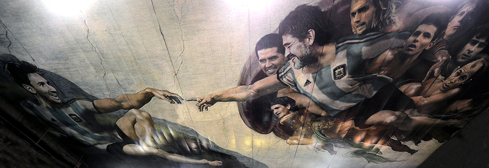

Lionel Andrés Messi (Spanish pronunciation:
[ljoˈnel anˈdɾes ˈmesi] ⓘ; born 24 June 1987), also known as
Leo Messi , is an Argentine professional footballer who plays as a forward for and captains both
Major League Soccer club Inter Miami and the Argentina national team. Widely regarded as one of the
greatest players
of all time, Messi has won a record eight Ballon d'Or awards, a record six European Golden Shoes, and
was named
the world's best player for a record eight times by FIFA. Until leaving the club in 2021, he had
spent
his
entire professional career with Barcelona, where he won a club-record 34 trophies, including ten La Liga
titles,
seven Copa del Rey titles, and the UEFA
Champions League four times. With his country, he won
the
2021
Copa América and the 2022 FIFA
World
Cup. A prolific goalscorer and creative playmaker, Messi holds the
records
for most goals in La Liga (474), most hat-tricks in La Liga (36) and the UEFA Champions League (eight),
and
most
assists in La Liga (192) and the Copa América (17). He also has the most international goals by a South
American
male (106). Messi has scored over 800 senior career goals for club and country, and has the most goals
by a
player for a single club (672).
Messi relocated to Spain from Argentina aged
13 to
join Barcelona, for whom he made his
competitive
debut aged 17 in October 2004. He established himself as an integral player for the club within the next
three years, and in his first uninterrupted season in 2008–09 he helped Barcelona achieve the first
treble in Spanish football; that year, aged 22, Messi won his first Ballon d'Or. Three successful
seasons followed, with Messi winning four consecutive Ballons d'Or, making him the first player to win
the award four times. During the 2011–12 season, he set the La Liga and European records for most goals
scored in a single season, while establishing himself as Barcelona's all-time top scorer. The following
two seasons, Messi finished second for the Ballon d'Or behind Cristiano Ronaldo (his perceived career
rival), before regaining his best form during the 2014–15 campaign, becoming the all-time top scorer in
La Liga and leading Barcelona to a historic second treble, after which he was awarded a fifth Ballon
d'Or in 2015. Messi assumed captaincy of Barcelona in 2018, and won a record sixth Ballon d'Or in 2019.
Out of contract, he signed for French club Paris Saint-Germain in August 2021, spending two seasons at
the club and winning Ligue 1 twice. Messi joined American club Inter Miami in July 2023, winning the
Leagues Cup in August of that year.

.jpg)
{kind=link}